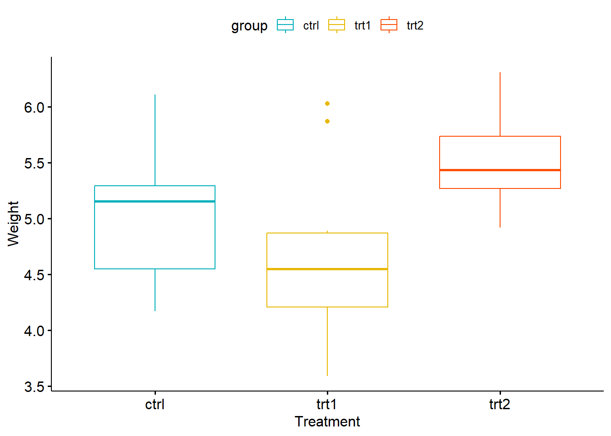
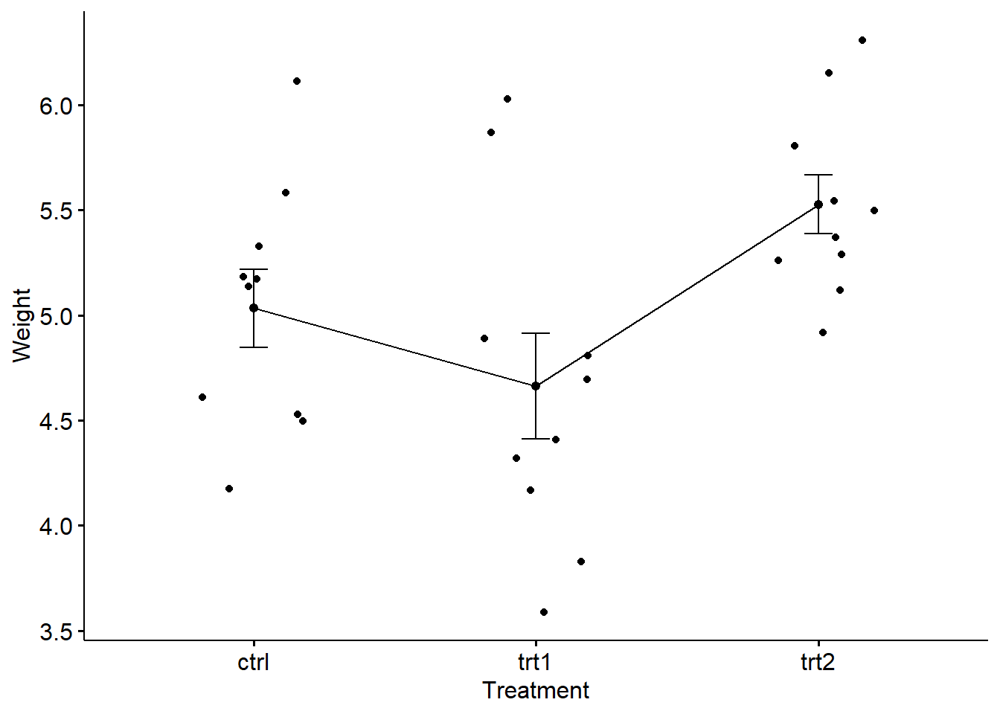
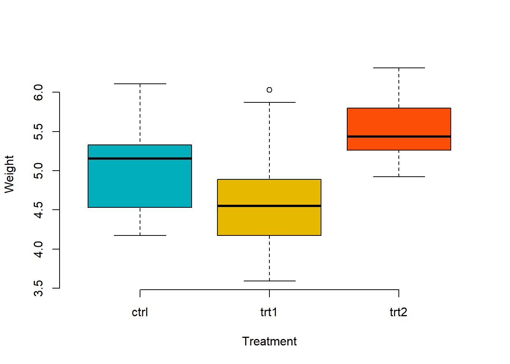
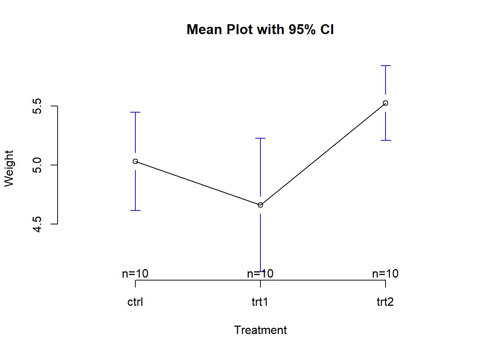
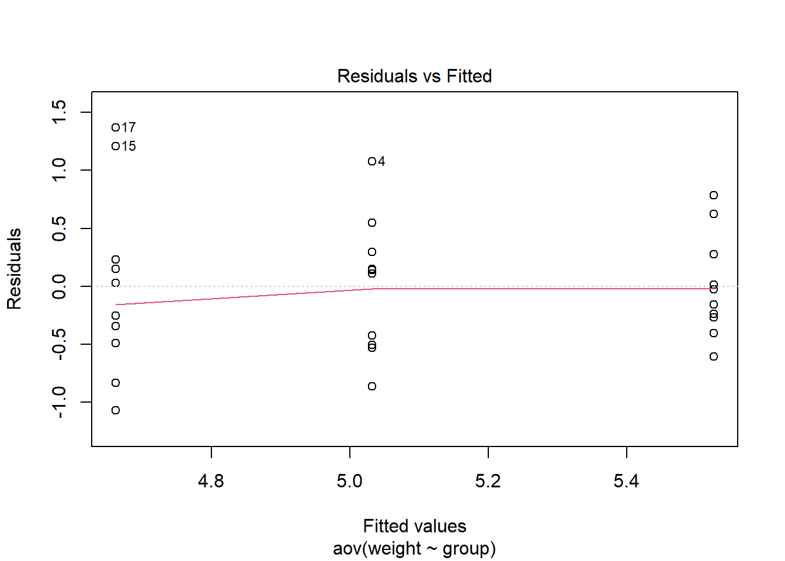
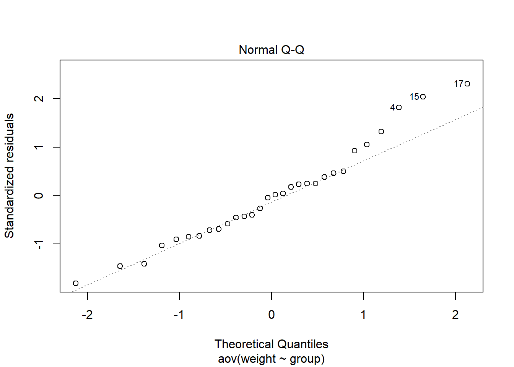

# If .txt tab file, use this
my_data <- read.delim(file.choose())
# Or, if .csv file, use this
my_data <- read.csv(file.choose())ANOVA
ANOVA
La prueba ANOVA (Análisis de Varianza) unidireccional es una técnica estadística utilizada para comparar las medias de tres o más grupos que se supone que provienen de poblaciones con distribuciones normales y varianzas iguales. Es un método de inferencia que se utiliza para determinar si hay diferencias significativas entre las medias de los grupos en una única variable dependiente.
La prueba ANOVA unidireccional se denomina “unidireccional” porque solo examina una variable independiente (factor) que divide a los datos en varios grupos. El objetivo es determinar si las diferencias observadas en las medias de los grupos son lo suficientemente grandes como para considerarse significativas o si son simplemente el resultado de variaciones aleatorias dentro de las muestras.
El procedimiento ANOVA se basa en la comparación de la variabilidad entre los grupos (variabilidad causada por las diferencias entre los grupos) y la variabilidad dentro de los grupos (variabilidad causada por la variación aleatoria dentro de los grupos). Si la variabilidad entre los grupos es significativamente mayor que la variabilidad dentro de los grupos, se considera que existe una diferencia significativa entre al menos uno de los grupos.
En resumen, la prueba ANOVA unidireccional se utiliza para responder preguntas como: “¿Hay alguna diferencia significativa entre las medias de tres o más grupos en una variable dependiente?”, y es una herramienta importante en la investigación para comparar múltiples grupos simultáneamente y determinar si hay diferencias estadísticamente significativas entre ellos.
my_data <- PlantGrowthConsulta tus datos
# Show a random sample
set.seed(1234)
dplyr::sample_n(my_data, 10) weight group
1 6.15 trt2
2 3.83 trt1
3 5.29 trt2
4 5.12 trt2
5 4.50 ctrl
6 4.17 trt1
7 5.87 trt1
8 5.33 ctrl
9 5.26 trt2
10 4.61 ctrl# Show the levels
levels(my_data$group)[1] "ctrl" "trt1" "trt2"Calcule las estadísticas de resumen por grupos: conteo, media, sd:
library(dplyr)
Attaching package: 'dplyr'The following objects are masked from 'package:stats':
filter, lagThe following objects are masked from 'package:base':
intersect, setdiff, setequal, uniongroup_by(my_data, group) %>%
summarise(
count = n(),
mean = mean(weight, na.rm = TRUE),
sd = sd(weight, na.rm = TRUE)
)# A tibble: 3 × 4
group count mean sd
<fct> <int> <dbl> <dbl>
1 ctrl 10 5.03 0.583
2 trt1 10 4.66 0.794
3 trt2 10 5.53 0.443Visualiza tus datos
Para usar gráficos base R , lea esto: Gráficos base R.Aquí, usaremos el paquete ggpubr R para una fácil visualización de datos basada en ggplot2.
Instale la última versión de ggpubr desde GitHub de la siguiente manera (recomendado):
# Install
if(!require(devtools)) install.packages("devtools")Loading required package: devtoolsLoading required package: usethisdevtools::install_github("kassambara/ggpubr")WARNING: Rtools is required to build R packages, but no version of Rtools compatible with R 4.2.3 was found. (Only the following incompatible version(s) of Rtools were found: 4.3.5550)
Please download and install Rtools 4.2 from https://cran.r-project.org/bin/windows/Rtools/.Skipping install of 'ggpubr' from a github remote, the SHA1 (6aeb4f70) has not changed since last install.
Use `force = TRUE` to force installation- Visualiza tus datos con ggpubr:
# Box plots
# ++++++++++++++++++++
# Plot weight by group and color by group
library("ggpubr")Loading required package: ggplot2ggboxplot(my_data, x = "group", y = "weight",
color = "group", palette = c("#00AFBB", "#E7B800", "#FC4E07"),
order = c("ctrl", "trt1", "trt2"),
ylab = "Weight", xlab = "Treatment")
# Mean plots
# ++++++++++++++++++++
# Plot weight by group
# Add error bars: mean_se
# (other values include: mean_sd, mean_ci, median_iqr, ....)
library("ggpubr")
ggline(my_data, x = "group", y = "weight",
add = c("mean_se", "jitter"),
order = c("ctrl", "trt1", "trt2"),
ylab = "Weight", xlab = "Treatment")
Si aún desea usar gráficos base R, escriba los siguientes scripts:
# Box plot
boxplot(weight ~ group, data = my_data,
xlab = "Treatment", ylab = "Weight",
frame = FALSE, col = c("#00AFBB", "#E7B800", "#FC4E07"))
# plotmeans
library("gplots")
Attaching package: 'gplots'The following object is masked from 'package:stats':
lowessplotmeans(weight ~ group, data = my_data, frame = FALSE,
xlab = "Treatment", ylab = "Weight",
main="Mean Plot with 95% CI") Warning in plot.xy(xy.coords(x, y), type = type, ...): "frame" is not a
graphical parameterWarning in axis(1, at = 1:length(means), labels = legends, ...): "frame" is not
a graphical parameterWarning in plot.xy(xy.coords(x, y), type = type, ...): "frame" is not a
graphical parameter
Calcule la prueba ANOVA unidireccional
La función summary.aov () se utiliza para resumir el modelo de análisis de varianza.
# Compute the analysis of variance
res.aov <- aov(weight ~ group, data = my_data)
# Summary of the analysis
summary(res.aov) Df Sum Sq Mean Sq F value Pr(>F)
group 2 3.766 1.8832 4.846 0.0159 *
Residuals 27 10.492 0.3886
---
Signif. codes: 0 '***' 0.001 '**' 0.01 '*' 0.05 '.' 0.1 ' ' 1Interpretacion de los datos
el valor de p es menor que el nivel de significación 0,05, podemos concluir que existen diferencias significativas entre los grupos resaltados con “*” en el resumen del modelo. Tukey múltiples comparaciones por pares La función TukeyHD () toma como argumento el ANOVA ajustado.
TukeyHSD(res.aov) Tukey multiple comparisons of means
95% family-wise confidence level
Fit: aov(formula = weight ~ group, data = my_data)
$group
diff lwr upr p adj
trt1-ctrl -0.371 -1.0622161 0.3202161 0.3908711
trt2-ctrl 0.494 -0.1972161 1.1852161 0.1979960
trt2-trt1 0.865 0.1737839 1.5562161 0.0120064diff : diferencia entre las medias de los dos grupos
lwr , upr : el punto final inferior y superior del intervalo de confianza al 95 % (predeterminado)
p adj : valor p después del ajuste para las comparaciones múltiples.
Múltiples comparaciones utilizando el paquete mulcomp
- modelo : un modelo ajustado, por ejemplo, un objeto devuelto por aov ().
lincft (): una especificación de las hipótesis lineales a probar. Las comparaciones múltiples en los modelos ANOVA se especifican mediante objetos devueltos por la función mcp ().
mvtnorm: Este paquete proporciona funciones relacionadas con las distribuciones t y normales multivariadas.
survival: este paquete se utiliza para el análisis de supervivencia y contiene funciones para analizar datos de tiempo hasta el evento.
TH.data: Este paquete proporciona varios conjuntos de datos que a menudo se utilizan para la enseñanza y las demostraciones.
MASS: Este paquete contiene funciones y conjuntos de datos para el modelado estadístico práctico.
library(multcomp)Loading required package: mvtnormLoading required package: survivalLoading required package: TH.dataLoading required package: MASS
Attaching package: 'MASS'The following object is masked from 'package:dplyr':
select
Attaching package: 'TH.data'The following object is masked from 'package:MASS':
geyserlibrary(multcomp)
summary(glht(res.aov, linfct = mcp(group = "Tukey")))
Simultaneous Tests for General Linear Hypotheses
Multiple Comparisons of Means: Tukey Contrasts
Fit: aov(formula = weight ~ group, data = my_data)
Linear Hypotheses:
Estimate Std. Error t value Pr(>|t|)
trt1 - ctrl == 0 -0.3710 0.2788 -1.331 0.3909
trt2 - ctrl == 0 0.4940 0.2788 1.772 0.1980
trt2 - trt1 == 0 0.8650 0.2788 3.103 0.0119 *
---
Signif. codes: 0 '***' 0.001 '**' 0.01 '*' 0.05 '.' 0.1 ' ' 1
(Adjusted p values reported -- single-step method)Prueba t por pares
La función pairewise.t.test () también se puede utilizar para calcular comparaciones por pares entre niveles de grupo con correcciones para pruebas múltiples.
pairwise.t.test(my_data$weight, my_data$group,
p.adjust.method = "BH")
Pairwise comparisons using t tests with pooled SD
data: my_data$weight and my_data$group
ctrl trt1
trt1 0.194 -
trt2 0.132 0.013
P value adjustment method: BH El resultado es una tabla de valores p para las comparaciones por pares. Aquí, los valores p han sido ajustados por el método de Benjamini-Hochberg. Comprobar la homogeneidad del supuesto de varianza
La gráfica de residuos versus ajustes se puede usar para verificar la homogeneidad de las varianzas.
No hay relaciones evidentes entre los residuos y los valores ajustados (la media de cada grupo), lo cual es bueno. Entonces, podemos asumir la homogeneidad de las varianzas.
# 1. Homogeneity of variances
plot(res.aov, 1)
library(car)Loading required package: carData
Attaching package: 'car'The following object is masked from 'package:dplyr':
recodeleveneTest(weight ~ group, data = my_data)Levene's Test for Homogeneity of Variance (center = median)
Df F value Pr(>F)
group 2 1.1192 0.3412
27 install.packages("carData")Warning: package 'carData' is in use and will not be installedEl carDatapaquete proporciona varios conjuntos de datos que a menudo se usan en ejemplos y ejercicios relacionados con el carpaquete, que se usa para modelos de regresión lineales y no lineales. Cuando carga el carpaquete (que podría haber cargado anteriormente), también carga automáticamente el carDatapaquete para acceder a los conjuntos de datos proporcionados por carData.
Interpretacion Del resultado anterior podemos ver que el valor p no es menor que el nivel de significancia de 0.05. Esto significa que no hay evidencia que sugiera que la varianza entre los grupos sea significativamente diferente desde el punto de vista estadístico. Por lo tanto, podemos asumir la homogeneidad de las varianzas en los diferentes grupos de tratamiento. Relajación del supuesto de homogeneidad de la varianza
n la función oneway.test () se ha implementado un procedimiento alternativo (es decir: prueba unidireccional de Welch ), que no requiere esa suposición .
- Prueba ANOVA sin suposición de varianzas iguales
oneway.test(weight ~ group, data = my_data)
One-way analysis of means (not assuming equal variances)
data: weight and group
F = 5.181, num df = 2.000, denom df = 17.128, p-value = 0.01739- Pruebas t por pares sin suposición de varianzas iguales
pairwise.t.test(my_data$weight, my_data$group,
p.adjust.method = "BH", pool.sd = FALSE)
Pairwise comparisons using t tests with non-pooled SD
data: my_data$weight and my_data$group
ctrl trt1
trt1 0.250 -
trt2 0.072 0.028
P value adjustment method: BH Comprobar el supuesto de normalidad
Gráfica de normalidad de residuos . En el siguiente gráfico, los cuantiles de los residuos se representan frente a los cuantiles de la distribución normal. También se traza una línea de referencia de 45 grados.
La gráfica de probabilidad normal de residuos se utiliza para comprobar la suposición de que los residuos se distribuyen normalmente. Debe seguir aproximadamente una línea recta.
# 2. Normality
plot(res.aov, 2)
La conclusión anterior está respaldada por la prueba de Shapiro-Wilk sobre los residuos de ANOVA (W = 0,96, p = 0,6) que no encuentra indicios de que se haya violado la normalidad.
# Extract the residuals
aov_residuals <- residuals(object = res.aov )
# Run Shapiro-Wilk test
shapiro.test(x = aov_residuals )
Shapiro-Wilk normality test
data: aov_residuals
W = 0.96607, p-value = 0.4379Alternativa no paramétrica a la prueba ANOVA unidireccional
kruskal.test(weight ~ group, data = my_data)
Kruskal-Wallis rank sum test
data: weight by group
Kruskal-Wallis chi-squared = 7.9882, df = 2, p-value = 0.01842